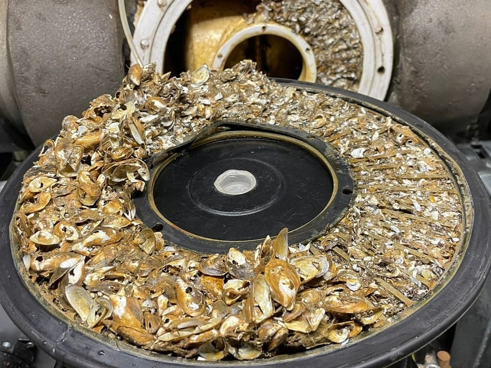
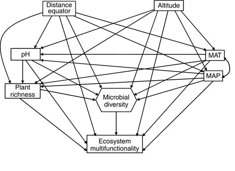
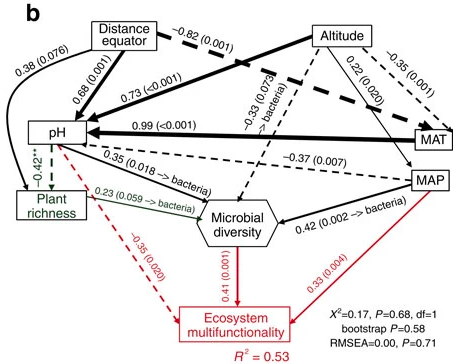
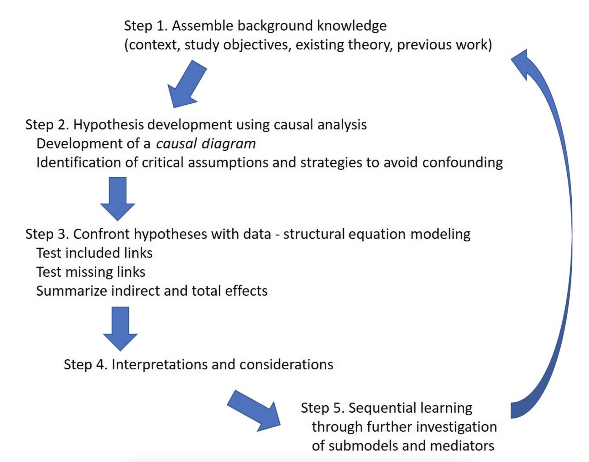
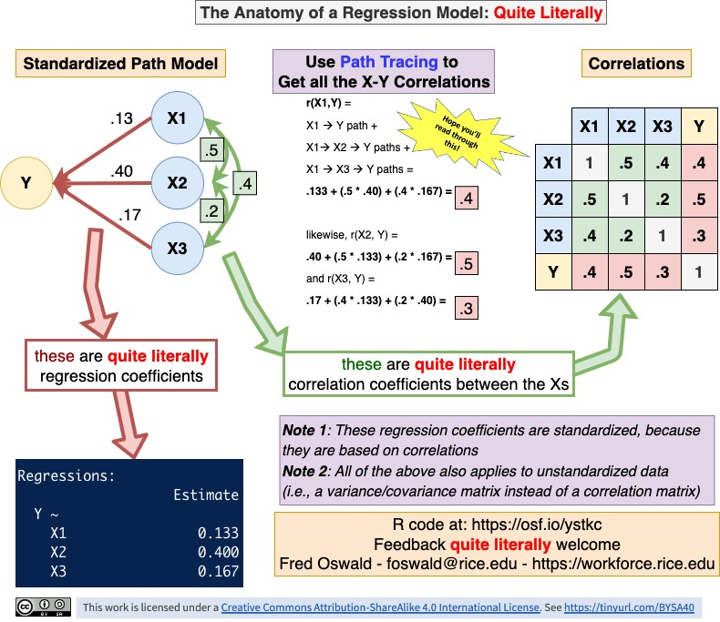
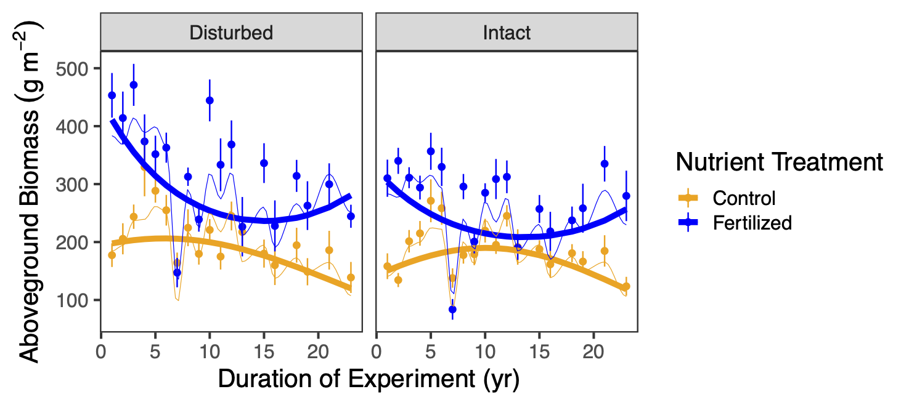
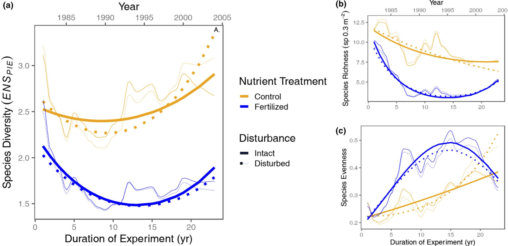

Introduction to structural equation modelling
Day 1: Basic modelling
Frank Pennekamp
Department of Evolutionary Biology and Environmental Sciences, University of Zurich
January 16, 2024
Quick introduction of participants
- Who are you?
- Why do you want to learn about SEM?
- What is your research question?
General information
Introduction of the Swiss SEM team
- Dr. Frank Pennekamp (main instructor)
- Dr. Rachel Korn (course development)
- Dr. Noémie Pichon, Dr. Fletcher Halliday, Dr. Eliane Meier, Dr. Hugo Saiz, Dr. Debra Zuppinger-Dingley, Rebecca Oester, Annabelle Constance, Fabienne Wiederkehr (course development)

Schedule & content
- Day 1:
- General introduction to SEM to model ecological systems
- Fitting SEMs to data (live demo)
- Model evaluation and reporting (exercises)
- Work on your research question
- Day 2:
- Latent and composite variables, interactions, complex sampling designs
- Fitting SEMs to data (live demo & exercises)
- Model visualization
- Work on your research question
- Day 3:
- Self-study / discussion with instructor and peers
Overview
- What the course is about:
- Global estimation with R package lavaan
- Hands-on exercises and live coding
- All exercises about one ecological dataset (Seabloom et al. 2020)
- Work on your own dataset
- What will not be covered
- Local estimation of SEMs (with R package piecewiseSEM)
- Advanced topics:
- random effects
- feedback loops
- dealing with spatial and temporal autocorrelation
Learning objectives
- Participants understand the capabilities and limits of SEMs to draw inference from data.
- Participants are able to fit, evaluate, interpret and visualize a SEM with
lavaan. - Participants are able to apply and assess SEMs fitted to their own datasets.
Getting started with Structural Equation Modeling
Research question first
- Ecological system = complex network of interactions between organisms and their environment.
- As ecologists, we hypothesize how things could be connected in ecological systems (e.g., species interactions, drivers).
- Research questions are often about particular cause-effect relationships in ecological systems.
- Testing hypotheses requires us to dissect when they occur for a reason vs. randomness.

Understanding causes
- Why is understanding causes important?
- Justify costly management interventions (e.g., eradication of invasive species, habitat restoration for threatened species)
- What is the problem?
- Confounding of cause with non-cause (interventions with no or detrimental effects)

Causality
“Correlation does not imply causation”
- Causation: everything else being equal, causing variation in X leading to variation in Y (=X causes Y).
- Experiments required to isolate effect of X on Y.
- Randomized controlled trials as gold standard to infer causes
- Experiments sometimes unethical or unfeasible.

“Correlation can indicate causation”
A simple correlation implies an unresolved causal structure, since we cannot know which is the cause, which is the effect, or even if both are common effects of some third, unmeasured variable.
Bill Shipley (Cause and correlation in biology, 2004)
- Inferring causes from observations is possible, but requires well justified assumptions.
- Necessary to rule out confounding (i.e., backdoor paths).
How can we determine causality?
The combination of knowledge of correlations with knowledge of causal relations, to obtain certain results, is a different thing from the deduction of causal relations from correlations.”
Sewell Wright, 1923
- Design and conduct experiments
- Develop theory
- Build knowledge from past observation
- Test hypotheses
How can we evaluate causality?
- Build a hypothesized causal structure 
How can we evaluate causality?
- Build a hypothesized causal structure
- Collect data
How can we evaluate causality?
- Build a hypothesized causal structure
- Collect data
- Test data against structure, extract inferences 
How can we evaluate causality?
- Build a hypothesized causal structure
- Collect data
- Test data against structure, extract inferences
- Repeat!
Biodiversity-ecosystem functioning
Regressions
- Only observed variables.
- Correlations between predictors usually ignored (up to threshold).
- Only direct effects.
A simple linear regression
lm(biomass ~ precipitation)- Regression coefficient quantifies the direction and strength of relationship.
- How much change in Y for one unit change in X.
Multiple regression
lm(biomass ~ precipitation + nutrients + ...)- More than one independent variable
- Estimates partial effects (i.e. effect of precipitation on biomass when nutrient addition is fixed)
Biodiversity-ecosystem functioning
Biodiversity-ecosystem functioning
Structural equation model
- Allow testing multivariate causal relationship.
- System thinking = causal relationships between multiple variables.
- Allow testing both direct and indirect effects.
- Incorporate observed and unobserved variables (i.e., ‘latent / composite’).
Structural equation model
lm(richness ~ nutrients)
lm(evenness ~ nutrients)
lm(biomass ~ richness + evenness + nutrients)
- Multiple independent and dependent variables
- Exogenous variables: only have paths emanating from them, not going into them.
Structural equation model
lm(richness ~ nutrients)
lm(evenness ~ nutrients)
lm(biomass ~ richness + evenness + nutrients)
- Endogenous variables have paths directed into them.
- An endogenous variable can also have arrows directing out of it.
- Endogenous variables must be predicted.
- An endogenous variable can also have arrows directing out of it.
- Indirect effect is the effect of an independent variable on a dependent variable through one or more intervening or mediating variables.
Mediation
- Tests whether a particular variable has a mediating effect on a path.
- Often used to test underlying mechanisms.
- In our example, we could ask whether the effect of nutrients on biomass is mediated through biodiversity.
- Possibilities: complete mediation, partial mediation, no mediation.
Motivations to use SEM:
- Driver-focused: Understand how drivers influence a system
- Response-focused: Understand and explain a particular response of a system
- Mediation-focused: Understand underlying causal pathways
- Theory-focused: compare observations of a system to available theory
SEM modelling philosophy
- A SEM should be specified based on prior evidence / theory (i.e., a meta-model).
- Each path requires justification.
- Continuum between theory (hypothesis-driven) to exploratory (data-driven) modelling.
- Causal diagram to specify relationships of actual variables (using meta-model).
Causal diagram
- Graph specifying putative cause-effect relationships.
- Data-generating mechanisms leading to a set of observational expectations.
- Causal diagrams are based on directed acyclic graphs (DAGs).
Directed acyclic graphs
- Variables are nodes (boxes).
- Edges (one-headed arrows) are causal relationships such as X affects Y.
- Directed = unidirectional.
- Edges can have any functional shape.
- Acyclic = no causal loops permitted.
- Omitted links and nodes have empirical implications (= assumptions about the causal diagram)
- U variables represent unmeasured causes.
Explanatory modelling with SEM

Questions?
Exercise
- Your turn!
- What type is your SEM (response, driver, mediation, theory focused)?
- Draw a causal diagram of the dataset you want to understand.
- Make a table with putative causal relationships.
SEM model fitting
A SEM example
Model identification
- Underidentified: not enough pieces of information to identify parameters uniquely (df < 0).
- Saturated: Just enough information to uniquely identify parameters, but no df to check model fit (df = 0).
- Over-identified: parameters can be uniquely identified and positive dfs to test model goodness-of-fit (df > 0).
Model identification
“t-rule” to quickly gauge whether a model is under-, just, or overidentified:
\[ t \leq \frac{n (n + 1 )}{2} \]
t = number of unknowns (parameters to be estimated, i.e. variances & covariances)
n = number of knowns (observed variables).
The LHS is how many pieces of information we want to know.
RHS: information we have (number of unique cells in the observed variance-covariance matrix).
Model estimation
How to estimate SEMs?
- Structural equation modelling is a framework rather than a statistical technique.
- Different estimation procedures possible.
- Lavaan uses Maximum likelihood estimation (ML).
- Variance-covariance matrix used for global estimation of SEM, d-separation for local estimation (piecewiseSEM).
Global estimation in a nutshell
SEM: scatterplot of observed variables

SEM: variance-covariance matrix
| var 1 | var 2 | var 3 | var 4 | |
|---|---|---|---|---|
| var 1 | 974.56969 | 60.32800 | 524.28441 | 23.78134 |
| var 2 | 60.32800 | 942.59070 | -71.66805 | 547.40241 |
| var 3 | 524.28441 | -71.66805 | 1140.97110 | 40.06272 |
| var 4 | 23.78134 | 547.40241 | 40.06272 | 1167.94670 |
- Variances on the diagonal, covariances on the off-diagonal elements
- Variance: \(VAR_{x}=\frac{\sum_{i=1}^{N}(x_{i}-\bar{x})}{N-1}\)
- Variance is the degree of spread in a set of data.
- Covariance: \(COV_{x,y}=\frac{\sum_{i=1}^{N}(x_{i}-\bar{x})(y_{i}-\bar{y})}{N-1}\)
- Covariance measures how much two variables are moving together.
SEM: correlation matrix
| var 1 | var 2 | var 3 | var 4 | |
|---|---|---|---|---|
| var 1 | 1.0000000 | 0.0629435 | 0.4971909 | 0.0222904 |
| var 2 | 0.0629435 | 1.0000000 | -0.0691077 | 0.5217154 |
| var 3 | 0.4971909 | -0.0691077 | 1.0000000 | 0.0347050 |
| var 4 | 0.0222904 | 0.5217154 | 0.0347050 | 1.0000000 |
- Correlation: \(COR_{x,y}=\frac{COV_{x,y}}{\sigma_x*\sigma_y}\)
- Correlation matrix is standardized variance-covariance matrix
Grace’s 8 rules of path coefficients
- The inferential heart of structural equation modeling are the model coefficients (parameters)
Rule 1
Unspecified relationships among exogenous variables are their bivariate correlations.
Rule 2
When two variables are connected by a single path, the coefficient of that path is the regression coefficient.
Rule 3
The strength of a compound path (one that includes multiple links) is the product of the individual coefficients.
Rule 4
When variables are connected by more than one pathway, each pathway is the ‘partial’ regression coefficient.
- The partial regression coefficient accounts for influence of more than one variable on the response
- In other words, the coefficient for one predictor controls for the influence of other predictors in the model
- The coefficients of multiple regression are partial coefficients
Rule 5
Errors on endogenous variables relate the unexplained correlations or variances arising from unmeasured variables.
- \(R^{2}\): ratio of explained to total variation in response (here Y1)
- Unexplained or residual variance = \(1 - R^{2}\)
- Captures other (unknown) sources causing correlation between Y1 and other variables to deviate from 1.
- In a path diagram, error variances are often represented as \(\zeta\) with an arrow leading into the endogenous variable.
Rule 6
Unanalyzed (residual) correlations among two endogenous variables are their partial correlations.
- Imagine we remove the path from Y1 to Y2.
- If they were exogenous variables, the relationship would be their bivariate correlation (Rule #1).
- Here we have we have to remove the effects of X on both variables.
- These are known as correlated errors and represented by double-headed arrows between the errors of two endogenous.variables.
Rule 7
The total effect one variable has on another is the sum of its direct and indirect effects.
\[ total = \gamma_{X, Y1} * \gamma_{Y1, Y2} + \beta_{X, Y2}\]
Rule 8
The total effect (including undirected paths) is equivalent to the total correlation.
Regression anatomy

Unstandardized vs standardized coefficients
- Global estimation based on covariance / correlation matrices.
- Results in unstandardized / standardized coefficients.
- Significance tests on unstandardized (raw) coefficients.
- Standardized coefficients for interpretation only (relative strength of paths).
- Only allow for comparisons within the same dataset.
Model evaluation
Model fit measures
- \(\chi^2\) statistic
- compare the model-implied to the observed variance-covariance
- good fit when \(\chi^2\) statistic is small (P > 0.05)
- sample-size dependent
- Comparative fit index (CFI):
- deviation from a ‘null’ model (variances estimated but covariances set to 0).
- higher is better, > 0.95 is considered good.
- Root-mean squared error of approximation (RMSEA)
- statistic penalizes models based on sample size
- < 0.10 is acceptable, and anything < 0.06 is good
- Standardized root-mean squared residual (SRMR)
- standardized difference between the observed and predicted correlations
- < 0.08 is considered good
Assumptions of SEM with lavaan
- (Multivariate) normality of endogenous (but not exogenous!) variables required
- Global estimation based on variance-covariance matrix
- Directed (acyclic) relationships
- Linear relationships
Data requirements
- Replication should be at least 5x the number of estimated coefficients (not error variances or other correlations).
- To estimate two relationships, at least n = 10 required to fit model.
- Ideally, replication is 5-20x the number of estimated parameters.
- The larger the sample size, the more precise (unbiased) are the estimates.
Heywood cases : when things go wrong
- Improper solutions:
- Negative variances
- Correlations larger than 1
- Negative variances
- Reasons for the warnings can be:
- Slightly negative error estimates (not really a problem)
- Indicators for latent variables need to be positively correlated
- Local non-identification of parameters
- Model misspecification
- Slightly negative error estimates (not really a problem)
SEM workflow in a nutshell
- Review the relevant theory and research literature to support model specification
- Specify a model (e.g., diagram)
- Determine model identification
- Select measures for the variables represented in the model
- Collect data
- Conduct preliminary descriptive statistical analysis (e.g., scaling, missing data, collinearity issues, outlier detection)
- Estimate parameters in the model
- Assess model goodness-of-fit
- Check for missing or unnecessary links
- Interpret and present results visually
Questions?
Live coding session
Lavaan syntax
Define model:
simple <-
"mass.above ~ nadd + rich + even + precip.mm + disk
rich ~ nadd + precip.mm
even ~ nadd + precip.mm"Fit model:
Lavaan syntax
| Formula type | R | Meaning | Example |
|---|---|---|---|
| regression | ~ |
is regressed on | y ~ x |
| correlation | ~~ |
correlate errors for | y1 ~~ y2 |
| latent | =~ |
set reflective indicators | Height =~ y1 + y2 + y3 |
| composite | <~ |
set formative indicators | Comp1 <~ 1*x1 + x2 + x3 |
| intercept | ~ 1 |
estimate mean for y |
y ~ 1 |
| labelling | * |
name coefficients | y ~ b1*x1 + b2*x2 |
| defining | := |
define quantity | Total := b1*b3 + b2 |
Your turn: working with the Seabloom dataset
Introduction to the dataset

- Experimental grassland study (started in 1982)
- Long-term consequences of human-driven environmental changes on grasslands:
- Soil disturbance
- Nitrogen deposition
- Changes in precipitation
Introduction to the dataset

- Study site located in Minnesota (Cedar Creek Ecosystem Science Reserve).
- Design:
- three study fields within the reserve.
- 35 x 55 m intact (black) and disturbed (red) plots within each field.
Introduction to the dataset

- 4 x 4 m nutrient treatment plots within the intact or disturbed plots (within fields A-C).
- Letters indicate the nutrient treatments.
Introduction to the dataset
- Effect of soil disturbance and nutrient enrichment on aboveground plant biomass.
- Colors: Control and NPK+ (all nutrients plus 9.5 g N m-2 yr-1).
Introduction to the dataset

- Effect of soil disturbance (disking) and nutrient enrichment on:
- effective number of species (ENSPIE)
- richness (S, species 0.3 m−2)
- Simpsons’s evenness
Potential research questions
- How has aboveground biomass changed as a function of soil disturbance and nutrient addition?
- How are these effects mediated by biodiversity?
Design meta-model
- Productivity (biomass) is directly influenced by the environment (nutrients and disturbance)
- Productivity (biomass) is directly influenced by biodiversity (richness and evenness).
- The environment also influences biodiversity and thus, have an indirect effect on productivity via biodiversity.
Exercise 1
- Exploration of dataset (variables and treatments)
- Check collinearity and normality
- Fit multiple linear regression models to estimate coefficients
- direct effects of environmental predictors on above ground biomass (AGB)
- (in)direct effects of environmental predictors on richness and evenness
- What do you conclude?
Exercise 2
- Fit the above DAG to the Seabloom data:
- Assess model goodness of fit.
- Investigate the modification indices. Are there paths to add that are reasonable?
- Check model summary.
- What do you conclude?
Exercise 3
After finding a model with good fit:
- Model analysis:
- Calculate the standardized coefficients.
- Add derived quantities (direct and indirect effects of nutrients and disturbance).
Exercise 4
- Saturated model:
- Model comparison with simpler models used previously.
- Perform model pruning.
- Decide on most parsimonious model and summarize model.
- What do you conclude?
Exercise 5
- Perform mediation analysis:
- Is the effect of disturbance mediated via its effect on richness and eveness, rather than directly on biomass?
- Add paths from disturbance to richness and evenness, remove the direct paths to AGB (both nutrients and disturbance).
- Compare model fit to simple model.
- What do you conclude?
Introduction to SEM (2024)